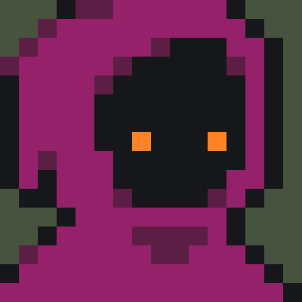
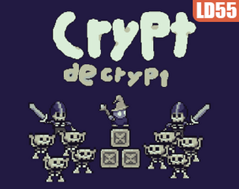

My Projects
This page highlights some of the projects I have completed or worked on in my courses. These projects demonstrate technical skills, problem solving, and the ability to create structured and meaningful work.

Bone Money
Designed and developed a top-down dungeon crawler using GameMaker and GML. Implemented enemy path-finding, attack logic, level design, sprite management, and event handling.

Crypt Decrypt
Designed and implemented levels, player interactions, and puzzle-based obstacle mechanics in Unity. Developed custom gameplay systems that challenged players through environmental design and logic-driven puzzles.
Project Summary Table
The table below provides an organized summary of selected projects, the tools used, and the purpose of each project.
| Bone Money | CPI 111 | GameMaker, GML | Solo developed a top down bullet hell dungeon cralwer |
| Crypt Decrypt | Unity, C# | HTML, CSS | Short game jam where I designed levels, player interactions, and puzzle mechanics. |
| Alcehmical Mayhem | CPI 311 | MonoGame, C# | Designed and implemented a Overcooked esc game in my own engine using MonoGame as a framework. |
| Unstable Star | Video Game Development Club ASU | Unity, C# | Designed and implemented skybox systems, transition animations, and transition scripts while collaborating wiht a team of 40+ studnets. |